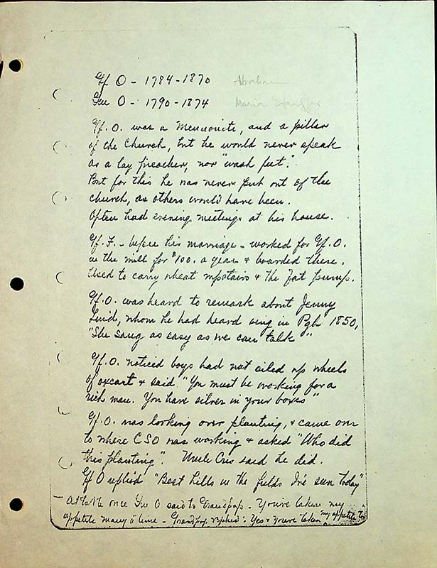

Gf. O. 1784-1870
Gm O- 1790-1874
Gf. O. was a Mennonite, and a polar of the church, but he would never speak as a lay preacher, nor “wash feet.” But for this he was never put out of the church, as other would have been. Often had evening meetings at his house.
GF. F. - before his marriage- worked for Gf. O. in teh mill for $100 a year and boarded there. Used to carry wheat upstairs & the fat pump.
Gf. O. was heard to remark about Jenny Lind, whom he had heard sing in Pgh in 1850, “She sang as easy as we can talk.”
Gf. O. noticed boys had not oiled up wheels of oxcart & said “You must be working for a rich man. You have silver in your boxes.”
Gf. O. was looking over planting, & came over to where CSO was working & asked, “Who did this planting?” Uncle Cris said he did. Gf. O. replied “Best hills in the fields I’ve seen today.”
-At table once Gm O said to Grandpap. You’ve taken my appetite many a time- Grandpap replied: Yes & you’ve taken my appetite too.